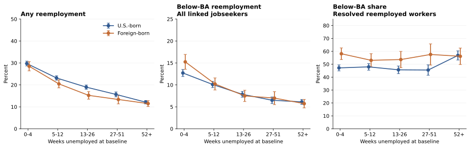
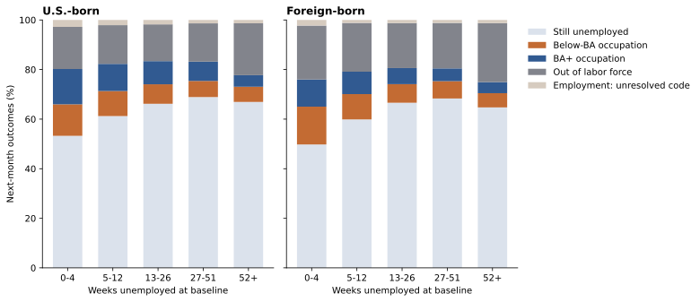

Graduate unemployment
& the jobs that follow.
Does longer unemployment predict entry into an occupation that typically requires less than a bachelor’s degree? Does that relationship differ by birthplace?
Research question in Korean
고학력 구직자의 실업기간이 길수록 다음 달에 학사학위가 통상 요구되지 않는 직업으로 재취업할 가능성이 높은가? 그 관계는 외국 출생자와 미국 출생자 사이에 다른가?
01 What the data say
Across the 2011–2025 window, weighted below-BA entry averages 8.9% per linked unemployment month for U.S.-born graduates and 9.2% for foreign-born graduates. In the main adjusted model, a doubling of 1 + elapsed weeks is associated with -1.47 percentage points for U.S.-born and -1.79 for foreign-born respondents. The interaction does not establish a difference between the birth groups at the nominal 5% level. The estimated slope difference is -0.32 points (95% interval [-0.75, +0.11]; p = 0.142).
These are associations among successfully linked respondents. “Below-BA” refers to BLS typical entry education for the occupation, not a verified requirement of the particular job.
02 From raw records to a usable sample
179 monthly files supply 177 observed adjacent-month pairs. Baseline months start in January 2011; the final transition is November → December 2025. October 2025 was not collected during the federal shutdown. Neither September → October nor October → November is interpolated, and December 2025 has no follow-up inside the study window.
| Sample stage | U.S.-born | Foreign-born |
|---|---|---|
| Eligible age/degree/search baseline observations | 59,429 | 15,638 |
| Scheduled for an adjacent-month interview | 44,758 | 11,786 |
| Valid linked risk-set observations | 41,416 | 10,790 |
| Unique person identifiers in linked risk set | 22,757 | 6,093 |
| Reemployed next month | 8,458 | 1,939 |
| BA threshold resolved | 7,644 | 1,769 |
| Reemployed, threshold unresolved | 814 | 170 |
| Weighted link rate among scheduled interviews | 92.3% | 91.3% |
Counts are unweighted person-month observations or transitions, not unique workers or population counts. A person can contribute several baseline unemployment observations. The earlier feasibility counts of 1,902 foreign-born and 8,386 U.S.-born reemployment events are not used as estimation inputs; the panel is reconstructed from the raw monthly files with documented link validation.
The reconstruction checks that age does not decline and keeps baseline eligibility fixed when respondents turn 65 or their reported degree changes. Consequently, its event counts can differ from the earlier pilot, which allowed a one-year decline and reapplied the age/degree screen at follow-up. These are separately documented samples, not additional observations appended to the pilot.
03 Duration changes two different margins
The left panel asks whether a jobseeker enters any job next month. The middle panel answers the main question: entry into a below-BA occupation among all linked jobseekers. The right panel conditions on reemployment into a classifiable occupation. Its denominator is different.

For U.S.-born respondents, any-job entry is 29.7% at 0–4 weeks and 12.1% at 52+ weeks; below-BA entry is 12.7% and 6.1%, respectively. For foreign-born respondents, those corresponding pairs are 28.5% versus 11.5% for any job and 15.2% versus 5.7% for below-BA entry. These unadjusted comparisons pool different people and survey dates.
The identity is exact when every new occupation is classified. The displayed conditional share excludes unresolved jobs; its corresponding exact decomposition uses the probability of resolved reemployment. The unresolved category is visible below.

Explore exact estimates and sample counts
n = denominator observations; events = outcome observations. Weighted probabilities differ from events ÷ n. Intervals reflect sampling uncertainty under the stated person-cluster approximation.
04 Holding observed characteristics constant
The main weighted linear probability models control for age and age squared, sex, four degree levels, exact baseline year-month, and month-in-sample. They include log₂(1 + elapsed weeks), foreign-born status, and their interaction. Estimates below are percentage-point changes per doubling of 1 + weeks; they are not percentage changes.
| Outcome | Duration effect | pp per doubling | 95% interval | p |
|---|---|---|---|---|
| Any reemployment / all linked | U.S.-born slope | -3.67 | [-3.95, -3.40] | <0.001 |
| Any reemployment / all linked | Foreign-born slope | -3.31 | [-3.81, -2.82] | <0.001 |
| Any reemployment / all linked | Slope difference | +0.36 | [-0.20, +0.92] | 0.210 |
| Below-BA entry / all linked | U.S.-born slope | -1.47 | [-1.66, -1.27] | <0.001 |
| Below-BA entry / all linked | Foreign-born slope | -1.79 | [-2.17, -1.40] | <0.001 |
| Below-BA entry / all linked | Slope difference | -0.32 | [-0.75, +0.11] | 0.142 |
| BA+ entry / all linked | U.S.-born slope | -1.90 | [-2.11, -1.70] | <0.001 |
| BA+ entry / all linked | Foreign-born slope | -1.36 | [-1.70, -1.02] | <0.001 |
| BA+ entry / all linked | Slope difference | +0.54 | [+0.16, +0.93] | 0.006 |
| Below-BA share / resolved reemployed | U.S.-born slope | +0.85 | [+0.04, +1.66] | 0.041 |
| Below-BA share / resolved reemployed | Foreign-born slope | +0.39 | [-1.11, +1.89] | 0.610 |
| Below-BA share / resolved reemployed | Slope difference | -0.46 | [-2.15, +1.24] | 0.597 |
The main below-BA duration slopes are -1.47 and -1.79 points, compared with -3.67 and -3.31 for any-job entry. Among resolved reemployment events, the corresponding below-BA-share slopes are +0.85 and +0.39 points. Conditioning on employment answers a different question and selects workers who successfully found jobs.
Mutually exclusive competing risks
A weighted multinomial logit retains continued unemployment, below-BA employment, BA+ employment, labor-force exit, and unresolved employment in one model. It uses the same individual controls and interview rotation controls, with year and calendar-month fixed effects. Predicted risks are standardized over the same pooled covariate distribution for both birth groups.
| Standardized change: 52 vs 13 weeks | Below-BA risk change (pp) | 95% interval | p |
|---|---|---|---|
| U.S.-born | -2.55 | [-2.84, -2.25] | <0.001 |
| Foreign-born | -3.18 | [-3.77, -2.60] | <0.001 |
| Difference between groups | -0.64 | [-1.29, +0.01] | 0.055 |
The multinomial estimates imply -2.55 points for U.S.-born and -3.18 points for foreign-born respondents when comparing 52 with 13 elapsed weeks. The difference between these changes is -0.64 points (p = 0.055). Optimization converged; 370 iterations, maximum scaled score component 1.6e-06.
The multinomial specification uses year plus season effects; the main linear models use exact year-month effects. This is a functional-form and timing-control check, not an identical re-estimation. It estimates one-month competing transitions, not cumulative incidence from the start of a fully observed unemployment spell.
Nonlinear duration-bin estimates
Weighted, adjusted differences in below-BA entry relative to 0–4 weeks, with the main model’s controls.
| Birth group | Weeks vs 0–4 | Adjusted difference (pp) | 95% interval | p |
|---|---|---|---|---|
| U.S.-born | 5-12 | -2.75 | [-3.81, -1.69] | <0.001 |
| U.S.-born | 13-26 | -4.77 | [-5.80, -3.74] | <0.001 |
| U.S.-born | 27-51 | -5.95 | [-7.06, -4.85] | <0.001 |
| U.S.-born | 52+ | -6.22 | [-7.20, -5.24] | <0.001 |
| Foreign-born | 5-12 | -4.89 | [-7.05, -2.74] | <0.001 |
| Foreign-born | 13-26 | -7.31 | [-9.42, -5.20] | <0.001 |
| Foreign-born | 27-51 | -7.62 | [-9.85, -5.38] | <0.001 |
| Foreign-born | 52+ | -8.69 | [-10.63, -6.74] | <0.001 |
05 What survives alternative choices?
| Specification | n | U.S. slope (pp) | Foreign slope (pp) | Slope difference [95% interval] | Interaction p |
|---|---|---|---|---|---|
| Unweighted | 52,206 | -1.48 | -1.77 | -0.29 [-0.67, +0.09] | 0.134 |
| Exclude 2020–2021 | 45,736 | -1.47 | -1.79 | -0.32 [-0.77, +0.13] | 0.165 |
| Baseline 2011–2019 | 36,461 | -1.39 | -1.69 | -0.30 [-0.80, +0.20] | 0.234 |
| Baseline 2020–2025 | 15,745 | -1.62 | -1.89 | -0.27 [-1.07, +0.54] | 0.519 |
| Exclude 2025 baseline months | 49,976 | -1.44 | -1.72 | -0.28 [-0.73, +0.16] | 0.206 |
| Control last-job BA class | 52,206 | -1.50 | -1.87 | -0.37 [-0.79, +0.06] | 0.091 |
| Unresolved jobs all BA+ | 52,206 | -1.47 | -1.79 | -0.32 [-0.75, +0.11] | 0.142 |
| Unresolved jobs all below-BA | 52,206 | -1.77 | -1.95 | -0.19 [-0.64, +0.27] | 0.428 |
Both groups have negative below-BA entry slopes in 8 of the 8 reported alternatives. These are specified measurement and sample checks, not a search for a favorable specification. Interaction p-values can vary by period and coding choice; conclusions should reflect that variation. The two extreme recodings bracket overall event classification but do not identify individual unresolved occupations.
Linkage and attrition
Rotation groups 4 and 8 are excluded from the scheduled next-month link denominator. Matching failures among the other rotation groups are attrition, not continued unemployment. The table compares eligible and matched respondents by birthplace and duration.
| Group · weeks | Scheduled n | Linked n | Weighted link % | Mean age: scheduled → linked | Female share: scheduled → linked |
|---|---|---|---|---|---|
| U.S.-born · 0-4 | 9,962 | 9,119 | 91.2% | 41.0 → 41.3 | 53.8% → 53.6% |
| U.S.-born · 5-12 | 10,011 | 9,217 | 92.3% | 41.2 → 41.3 | 50.8% → 50.9% |
| U.S.-born · 13-26 | 9,008 | 8,330 | 92.0% | 42.4 → 42.7 | 48.3% → 48.3% |
| U.S.-born · 27-51 | 5,712 | 5,321 | 92.7% | 43.4 → 43.7 | 49.0% → 48.8% |
| U.S.-born · 52+ | 10,065 | 9,429 | 93.4% | 45.3 → 45.4 | 46.5% → 46.3% |
| Foreign-born · 0-4 | 2,375 | 2,165 | 90.9% | 40.8 → 41.0 | 53.2% → 53.8% |
| Foreign-born · 5-12 | 2,601 | 2,365 | 90.7% | 41.2 → 41.4 | 54.3% → 54.3% |
| Foreign-born · 13-26 | 2,296 | 2,084 | 90.8% | 42.2 → 42.5 | 53.2% → 53.1% |
| Foreign-born · 27-51 | 1,499 | 1,395 | 92.7% | 43.2 → 43.4 | 51.7% → 52.3% |
| Foreign-born · 52+ | 3,015 | 2,781 | 91.7% | 46.2 → 46.3 | 52.2% → 51.8% |
Overall, 92.3% of scheduled U.S.-born observations and 91.3% of scheduled foreign-born observations link successfully. Duration-specific retention and demographic shifts are reported above rather than treating all missing follow-ups as unemployment.
Baseline cross-sectional weights are used, without a calibrated longitudinal weight or nonresponse adjustment. These checks describe selection; they do not demonstrate that attrition is ignorable. Person clustering handles repeated observations but does not reproduce the complete CPS stratified and clustered survey design.
06 Conclusion and economic interpretation
Answer to the main question: The data do not support a higher next-month below-BA entry risk with longer unemployment: both main adjusted duration slopes are negative.
Difference by birthplace: The interaction does not establish a difference between the birth groups at the nominal 5% level. The foreign-minus-U.S. slope difference is -0.32 percentage points per doubling of 1 + weeks, with interval [-0.75, +0.11]. A nonsignificant interaction is not proof that the groups have identical relationships.
Economic interpretation: The fall in jobfinding means a greater below-BA share among successful entrants can coexist with a smaller below-BA entry hazard among all jobseekers. Differences in this share may be consistent with occupational concessions or constrained offers, but duration-dependent selection into unemployment and employment can generate similar patterns. The study documents transitions; it does not isolate credential recognition, discrimination, visa constraints, or changing reservation standards.
Next research step: Replicate the mapping with historical education vintages and richer occupation bridges, implement calibrated longitudinal weights and full survey-design inference, and test whether the pattern persists within clearly identified unemployment spells and prior occupation groups.
What this study cannot identify
- Causation. Long-duration respondents may differ in employability, prior careers, location, health, or preferences. A longer observed spell is not randomly assigned.
- A concession mechanism. Actual below-BA entry can reflect constrained job offers, credential recognition, or existing career patterns. CPS does not show whether the worker lowered an occupational reservation threshold.
- Foreign qualifications or visa restrictions. Foreign-born status does not establish where a degree was earned, immigration status, or a legal mobility constraint.
- Individual job requirements. One fixed BLS 2025 classification is applied throughout. Occupations aggregate jobs and requirements may change over time.
- Complete spells. Respondents enter observation with already elapsed unemployment. The 4–8–4 rotation, household moves, and survey nonresponse prevent complete follow-up for every spell.
07 Measurement and estimation details
Sample and month linking
At month t: age 25–64, PEEDUCA 43–46, PEMLR = 4 (unemployed and looking), valid nonnegative PRUNEDUR, and positive PWSSWGT. Foreign-born = PRCITSHP 4 or 5; U.S.-born = 1. Categories 2 (born in U.S. outlying areas) and 3 (born abroad to American parents) are excluded to keep the comparison strictly U.S.-born; this differs from BLS’s broader native-born definition.
Links use HRHHID, HRHHID2, and PULINENO. Eligible baseline MIS is 1, 2, 3, 5, 6, or 7; follow-up MIS must be exactly baseline + 1. Sex and birth group must agree; age must stay the same or rise by one. Duplicate person keys are excluded. Eligibility is evaluated at baseline, so turning 65 or a reported education recode at follow-up does not by itself remove a link. Employment includes PEMLR 1 or 2. The main/primary occupation is read at t + 1.
Occupation-to-education mapping
Follow-up occupation codes use the 2010 Census scheme through December 2019 and the 2018 scheme from January 2020. The official Census 2010 → 2018 crosswalk connects earlier codes to the newer scheme. The newer Census code list connects occupations to SOC groups. BLS Table 5.4 (2025 vintage, public HTML read on 8 October 2026) provides 831 typical education assignments.
A below-BA occupation requires, typically, no credential, high school, some college, a postsecondary nondegree award, or an associate’s degree. Bachelor’s, master’s, and doctoral/professional assignments are BA+. Combined BLS codes supply their published threshold to their constituent SOC codes. Census residual X codes exclude SOC occupations separately assigned to precise Census codes. A Census code is resolved only when all possible mapped BLS occupations agree at the BA threshold. Mixed codes and missing mappings remain unresolved; no employment-share weighting or arbitrary majority rule is used.
For older codes, agreement is required across every possible newer Census destination. The published crosswalk CSV records resolved, mixed, and unmapped classifications. The current-vintage bridge is deliberately conservative; historical BLS education vintages and employment-share crosswalks are additional future checks.
Weights, uncertainty, and model specification
The denominator is the linked baseline unemployment risk set. Baseline PWSSWGT has four implied decimals. Pooled estimates weight person-months, so respondents with longer observed unemployment contribute more risk-set observations. Unresolved reemployment remains in the denominator and is represented separately. The below-BA event coefficient is therefore an association with entry into unambiguously classified below-BA employment; all-BA+ and all-below-BA recodings of unresolved jobs bracket this measurement choice.
Person-cluster sandwich errors account for repeated linked observations. Chart intervals use clustered weighted-mean influence scores and a normal approximation; regression intervals use clustered sandwich covariance. They are nominal 95% intervals, without a full CPS survey-design variance estimator. The duration-bin specification checks nonlinearity. The prior-occupation sensitivity adds BA+, below-BA, or unresolved last-job class at baseline. All sensitivity estimates use the same main controls unless stated otherwise.
Multinomial maximum likelihood uses normalized baseline weights, five outcome states, and an unpenalized log likelihood. The numerical optimization status and standardized predictions are saved in results.json. Standard errors for standardized 52-versus-13-week contrasts use the delta method with person-cluster covariance.
Data provenance and known breaks
The local raw monthly ZIPs are read without modification. input_manifest.json records file sizes, member sizes, CRCs, and duplicate-key counts. The CPS source page supplies original files and layouts. Relevant fixed-width fields were checked against the available 2015, 2017, and 2021–2025 layouts; statistical range and linkage checks are applied over the full period.
Census corrected January–July 2020 files after an occupation/education editing error. The local file inventory is documented, but its revision status is not independently established by a fresh source-file checksum. Excluding 2020–2021 removes those months from a reported sensitivity. Census education-based occupation editing is itself a measurement caveat. October 2025 has no public microdata; November duration interviewing and weighting were also affected. A sensitivity excludes all 2025 baseline observations.
08 Sources and reproducibility
- Census: Basic Monthly CPS files and record layouts
- Census: occupation code lists and crosswalks · 2018 code list and 2010 → 2018 crosswalk
- BLS: Table 5.4, education and training by occupation (2025)
- Census: CPS methodology and sample design
- BLS: CPS technical documentation and occupation classifications
- BLS: 2025 shutdown effects and missing October data
- Census: January–July 2020 occupation-code corrections
Download the official monthly CPS files and Census crosswalk, install the listed Python dependencies, then run build_panel.py followed by analyze.py. The reproduction package contains source code, aggregate tables, model results, the input manifest, and threshold definitions. It excludes individual respondent records.